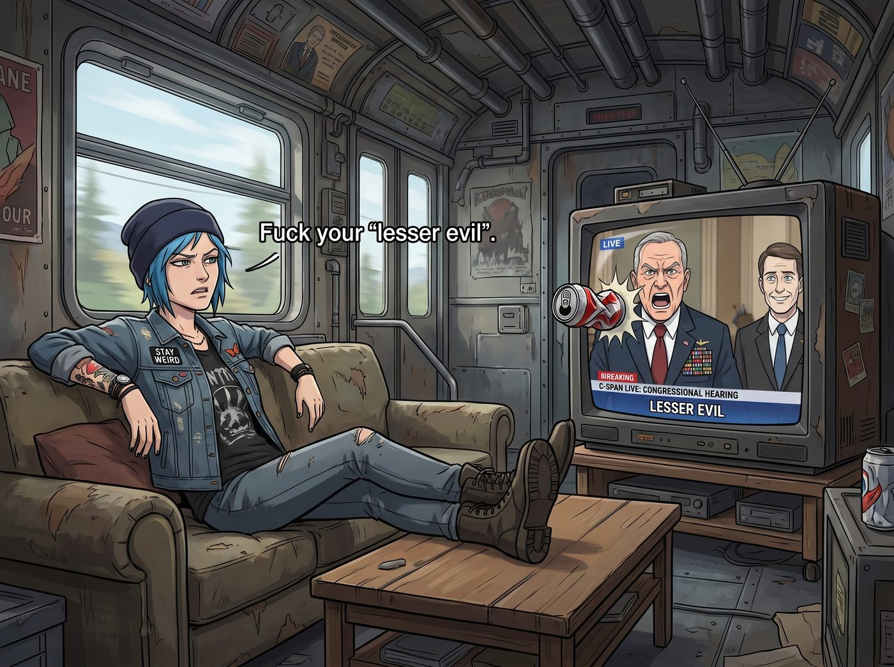

較小的惡（中）：聽證會

「……主席先生，這是一場徹頭徹尾的災難！FBI 的所謂『神勇行動』，不僅是一次越權的搶功，更是毀掉我們國家安全局（NSA）佈線三年的『深水炸彈』計畫！」
二號車廂裡，那台被 Chloe 改裝過的舊電視機正播放著 C-SPAN 頻道的國會聽證會直播。
畫面上，一位胸前掛滿勳章、西裝筆挺的情報機構高層正拍著桌子，對著旁邊那位笑容已經僵在臉上的 FBI 局長狂噴口水： 「『深淵』那群蠢貨，是我們追蹤一個東歐國家級駭客集團的一條邊緣線索！我們正在順著他們往上摸，就快摸到真正的大魚了！結果呢？幾個自以為是的網路俠客發了一封匿名郵件，FBI 就像聞到血腥味的鯊魚一樣撲過去，把我們三年的佈線踩了個粉碎！你們知道我們損失了多少戰略情報嗎？！」
FBI 局長也不甘示弱，立刻對著麥克風反擊：「局長閣下，您口中那條『邊緣線索』，當時正在勒索西雅圖三家兒童重症診所！您明明可以隨時收網,卻為了往上摸,放著他們不管!如果這叫『放長線釣大魚』，那麼請問那些因為無法使用醫療設備而命懸一線的患兒，是你們計畫中的『可接受附帶損害』嗎？FBI 是在拯救國民的生命！」
「那是為了更大的利益（Greater Good）！為了防止未來國家級的基礎設施被癱瘓，我們必須容忍這種較小的惡（Lesser Evil）！」
「啪！」
一聲悶響，一顆捏得皺巴巴的空鋁罐精準地砸在了電視螢幕上，剛好砸中那個高喊「較小的惡」的情報局長鼻尖。
「去你媽的『較小的惡』。」Chloe 靠在沙發上，雙腳翹在矮桌上，毫不掩飾眼裡的厭惡，「大人們每次想要合理化自己的冷血和無能時，就會把『Greater Good』搬出來。這跟 Arcadia Bay 那些為了建豪宅而逼走窮人的政客有什麼區別？拿別人的命去釣魚，還覺得自己是個操盤的英雄。」
電視上的鬧劇還在繼續。兩位局長在國會大佬面前互相甩鍋，一個高舉「人道救援」的大旗邀功，另一個則揮舞著「國家安全」的報表發爛渣，場面堪比三流肥皂劇。
二號車廂裡的氣氛卻異常安靜。這場關於「電車難題」的現實版直播，精準地觸動了每個人最敏感的神經。
Victoria 破天荒地沒有嘲笑政客們的廉價西裝。她端著一杯黑咖啡，眉頭緊鎖，用一種看透資本運作的冰冷語氣說道： 「這就是典型的企業級止損邏輯。在他們的資產負債表上，幾個平民孩童的生命權重，遠低於抓到一個國家級駭客的政治紅利。但這種邏輯蠢透了。當你開始把人命當成『可消耗資產』來培養下線時，你就不再是系統的保護者，而是這個爛系統最大的投資人。如果 Chase 家族用這種方式做生意，早就被董事會踢出局了。」
Max 坐在窗邊，手指無意識地摩挲著相機邊緣。
她是這裡唯一真正面對過終極「電車難題」的人——在另一個時空的風暴中，她曾被迫在一個人的生命和一座小鎮的存亡之間做出選擇。
「惡就是惡，沒有什麼大小之分。」Max 輕聲說道，聲音裡透著一絲疲憊與釋然，「當你選擇對眼前的苦難視而不見，甚至利用它來圖謀所謂的『未來』時，那個你想要保護的『美好未來』就已經被污染了。我不相信建立在犧牲無辜者基礎上的『大局』。」
Kate 默默地走到電視機前，按下了電源鍵。螢幕陷入黑暗，那些聒噪的推諉與爭吵瞬間消失。
「上帝不會在一端放上生病的孩子，在另一端放上國防安全，然後讓我們去衡量哪邊更重。」Kate 轉過身，眼神溫柔卻無比堅定，「如果一條路必須踩著弱者的眼淚才能走通，那這條路一開始就是錯的。」
所有人的目光，最終都落在了工作站前的 Lily 身上。
這場風暴的始作俑者，正安靜地看著已經黑掉的電視螢幕。她的筆記本電腦上還殘留著幾行沒有關閉的追蹤代碼。
在過去的十幾年裡，Lily 一直生活在父母打造的「Lesser Evil」之中——「我們現在對妳嚴苛（小惡），是為了妳未來能有完美的人生（大善）」。
那種將當下的痛苦合理化、將人的感受數據化、為了某個虛無縹緲的「終極目標」而無休止 PUA 的邏輯，曾經差點摧毀了她。
「Lily？」Chloe 輕聲喚了一句。
Lily 緩緩轉過轉椅，推了推那副圓框眼鏡。她的眼神裡沒有迷茫，只有一種經歷過精密計算後得出的、冷酷而清澈的理智。
「情報局長的演算法裡存在一個致命的系統級錯誤。」
Lily 開口了，語氣依然是那種機器人般的平靜，但裡面卻多了一種前所未有的溫度： 「他假設『容忍現在的罪惡，能換取未來的安全』。但根據行為經濟學和混沌理論，被縱容的系統性作惡，其破壞力會呈指數級增長。他們今天能把兒童醫院當作誘餌，明天就能把整個西雅圖當作試驗場。
在我的數學模型裡，『Greater Good』如果不能保護此時此刻、站在我面前的具體的人，那它就是一個無法兌現的空頭支票；而『Lesser Evil』，本質上就是一種對惡的默許與共謀。」
她停頓了一下，看向那幾個給了她無限包容的女孩。
「我不會為了釣一條虛擬的大魚，而讓那三家醫院的孩子成為代價。我破壞了他們的計畫，我甚至讓 FBI 搶了情報局的 KPI。」
Lily 嘴角微微上揚，露出了一個罕見的、甚至帶著一絲狡黠的笑容： 「如果這讓那些西裝革履的政客們感到憤怒……那麼我的結論是：我的系統優化，非常成功。」
「這就對了，書呆子！」Chloe 大笑起來，走過去用力揉了揉 Lily 的頭髮。
電視裡的政客還在為了權力和責任互相撕咬，但在這節偏離軌道的二號車廂裡，五個邊緣女孩卻達成了某種堅不可摧的共識。
在這個操蛋的世界裡，沒有什麼高高在上的「較小的惡」。
如果有混蛋敢欺負無辜的人，那就駭爆他們的主機，砸爛他們的車窗，然後回家，心安理得地吃一頓雖然沒有營養、但絕對美味的晚餐。